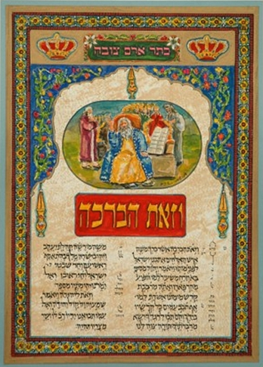

יליד ארם צובא · חלב
אברהםשמי־שהם
שישה עשורים של ציור: אותיות הכתר שנשמרו במערת אליהו, סמטאות חלב שנותרו בזיכרון הילדות, ונופי הארץ שאליה עלה בשנת 1960.
הסדרות
חמישה עולמות, קו אחד
האמן עובד לפי סדרות. כל אחת נפתחת בגלריה המלאה, ואפשר לדלג ביניהן בכל רגע.
מבחר
עבודות נבחרות
הקליקו על עבודה כדי להגדיל. אפשר לגלול לצדדים.

סגירת מעגל
הכתר שמעבר לקיר
בילדותו בחלב גר האמן סמוך לבית הכנסת הגדול והעתיק, שבו נשמר ב״מערת אליהו״ כתר ארם צובא — התנ״ך הקדוש והמיסטי — משך מאות בשנים, עד שהובא לישראל ומוצג כיום בהיכל הספר במוזיאון ישראל בירושלים.
ציור ואיור קטעים מהכתר היא משאת חייו של האמן וסגירת מעגל מילדותו.